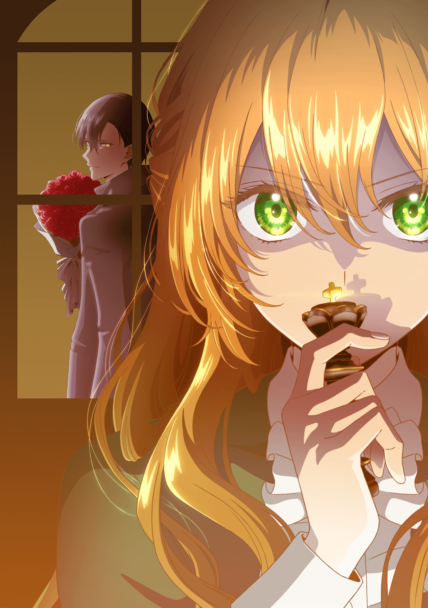

El webtoon Kanojo ga Koushakutei ni Itta Riyuu tendrá un anime
Un comunicado de prensa informó que el webtoon escrito por Milcha e ilustrado por Whale, Kanojo ga Koushakutei ni Itta Riyuu (The Reason Why Raeliana Ended up at the Duke’s Mansion), tendrá una adaptación al anime. Los detalles de producción y la fecha de estreno serán anunciados próximamente.
Por otra parte, Fujimoto comenzó la publicación del manga Chainsaw Man en la revista Weekly Shonen Jump de la editorial Shueisha en diciembre de 2018, finalizando la primera parte en diciembre de 2020. El undécimo volumen dio fin a la primera parte de la obra, y la continuación todavía está en proceso. El manga contará con una adaptación a serie de anime, misma que será producida por los estudios MAPPA y cuyo estreno está programado para el año 2022 en Japón.
El webtoon es, de hecho, una adaptación de la novela originalmente publicada en el sitio Tappytoon. Whale comenzó la publicación de la obra a través del servicio digital Fross Comic de la editorial Kadokawa, con su primer volumen recopilatorio publicado en noviembre de 2019. Al respecto del anuncio de adaptación, el artista Whale escribió: «Estoy muy contento de ver a los personajes vivos y en movimiento. Durante un tiempo no lo sentí realmente, pero en ese momento finalmente empecé a pensar: “¡Realmente va a ser una animación!”. Me gustaría agradecerles de nuevo su apoyo a la animación de esta obra».
Sinopsis de Whale, Kanojo ga Koushakutei ni Itta Riyuu
Tras una misteriosa muerte, Park Eunha entra en el mundo de una novela. Revive como un personaje menor, Raeliana McMillan, que va a ser envenenada hasta la muerte por su propio prometido. Para romper con su peligroso prometido, ofrece un trato subrepticio al protagonista masculino de la novela, Noah Wynknight, pero acaba teniendo un romance con otros hombres que no forman parte del plan. Noah Wynknight, de ineludible pero sospechoso encanto; el honesto Justin Shamal, que sólo ama a una persona; o Adam Taylor, por el que siente debilidad sin motivo cada vez que lo ve. ¿Saldrá Raeliana con éxito de esta crisis y creará un nuevo final para sí misma? ¿Quién será el que se unirá a Raeliana en su nuevo final?